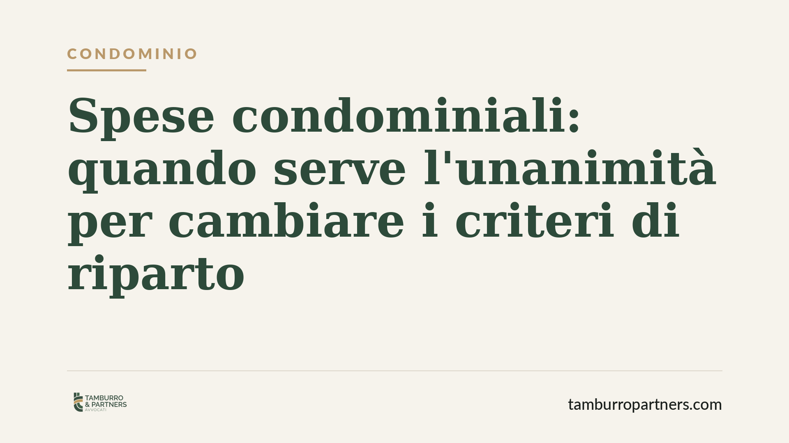

Spese condominiali: quando serve l'unanimità per cambiare i criteri di riparto
Modificare i criteri di ripartizione delle spese condominiali richiede il consenso di tutti i condomini. Lo ribadisce la Corte di Cassazione, ancorando la regola all'articolo 1123 del Codice civile. Una tutela contro gli abusi che, nella pratica, rischia però di paralizzare la gestione dell'edificio. Vediamo quando l'unanimità è davvero necessaria e come muoversi.

Il principio affermato
La Corte di Cassazione ha confermato un orientamento consolidato: per modificare i criteri legali o convenzionali di ripartizione delle spese condominiali non basta la maggioranza, serve il consenso di tutti i condomini.
La ragione è semplice. Alterare il criterio di riparto significa incidere direttamente sulla posizione economica del singolo, spostando su di lui una quota di spesa maggiore rispetto a quella prevista. Un'operazione che non può essere imposta da una maggioranza, per quanto ampia.
Inquadramento normativo
Il riferimento è l'articolo 1123 del Codice civile, che detta i criteri generali di ripartizione delle spese: in proporzione al valore delle singole proprietà (millesimi), salvo diversa convenzione. La norma distingue tra spese di conservazione e godimento delle parti comuni, spese per l'uso differenziato dei beni e spese relative a impianti destinati a servire i condomini in misura diversa.
La giurisprudenza ha chiarito la differenza tra due situazioni che spesso vengono confuse.
Da un lato, la delibera che si limita a ripartire una spesa applicando i criteri già in vigore: qui basta la maggioranza prevista dall'articolo 1136 c.c. Dall'altro, la delibera che modifica il criterio stesso di ripartizione: qui serve l'unanimità, perché si tratta di derogare al regime legale o alla tabella convenzionale.
È un punto delicato. La tabella millesimale che riproduce i criteri di legge può essere rettificata a maggioranza per correggere errori. Ma se la tabella nasce da un accordo che deroga ai criteri legali, la sua modifica richiede il consenso di tutti.
Cosa cambia nella pratica
L'effetto è duplice, e in parte contraddittorio.
Sul piano della tutela, il principio protegge il singolo condomino dal rischio di vedersi caricato di spese non dovute per volontà altrui. Nessuna maggioranza può decidere che paghi di più solo perché conviene agli altri.
Sul piano gestionale, però, l'unanimità è un ostacolo concreto. Basta un solo condomino contrario — o irreperibile — per bloccare qualsiasi riequilibrio dei criteri, anche quando questo sarebbe ragionevole e condiviso dalla quasi totalità dell'edificio.
Nella vita reale del condominio, questo si traduce spesso in stallo: criteri di riparto obsoleti che restano in vigore, contenziosi tra vicini, delibere impugnate perché adottate con la sola maggioranza dove serviva l'unanimità.
È utile ricordare che una delibera assunta a maggioranza laddove la legge richiede l'unanimità non è semplicemente irregolare: è nulla, e la nullità può essere fatta valere senza limiti di tempo, anche da chi non ha partecipato all'assemblea o vi ha votato a favore.
Il ruolo dell'amministratore
Per l'amministratore condominiale la questione è tutt'altro che teorica. Portare in delibera una modifica dei criteri di riparto senza verificare quale maggioranza sia necessaria espone a delibere impugnabili e a potenziali profili di responsabilità.
Consigliamo di distinguere sempre, prima dell'assemblea, se l'ordine del giorno comporta una semplice applicazione dei criteri esistenti o una loro modifica. È una verifica che orienta l'intera conduzione della riunione e la redazione del verbale.
Cosa fare in concreto
- Verificate la natura della tabella millesimale in uso: se riproduce i criteri legali o se deroga a essi con un accordo. Da questo dipende il quorum necessario per modificarla.
- Prima di deliberare, qualificate l'oggetto: applicare un criterio esistente richiede la maggioranza; cambiarlo richiede l'unanimità. Mettetelo per iscritto nell'avviso di convocazione.
- Documentate il consenso di tutti i condomini quando la modifica incide sui criteri: raccogliete le adesioni in forma scritta, soprattutto per i condomini assenti.
- Non date per acquisita una delibera a maggioranza che modifichi i criteri: è esposta a nullità rilevabile in ogni momento.
- In caso di stallo persistente, valutate la strada dell'accordo negoziale o del ricorso all'autorità giudiziaria per la revisione delle tabelle, quando ne ricorrano i presupposti.
---
*Contributo informativo a cura di Tamburro & Partners - Avv. Giuseppe Tamburro. Non costituisce parere legale.*
Ogni condominio ha una storia a sé.
Se gestisci un'amministrazione e vuoi un confronto su una specifica questione condominiale, scrivi allo studio. Ti rispondiamo entro un giorno lavorativo.